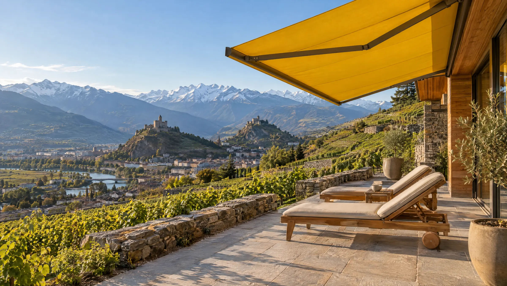
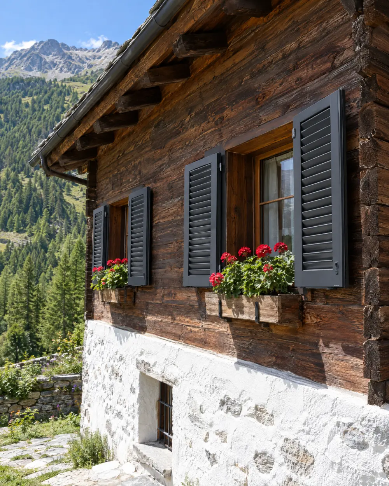
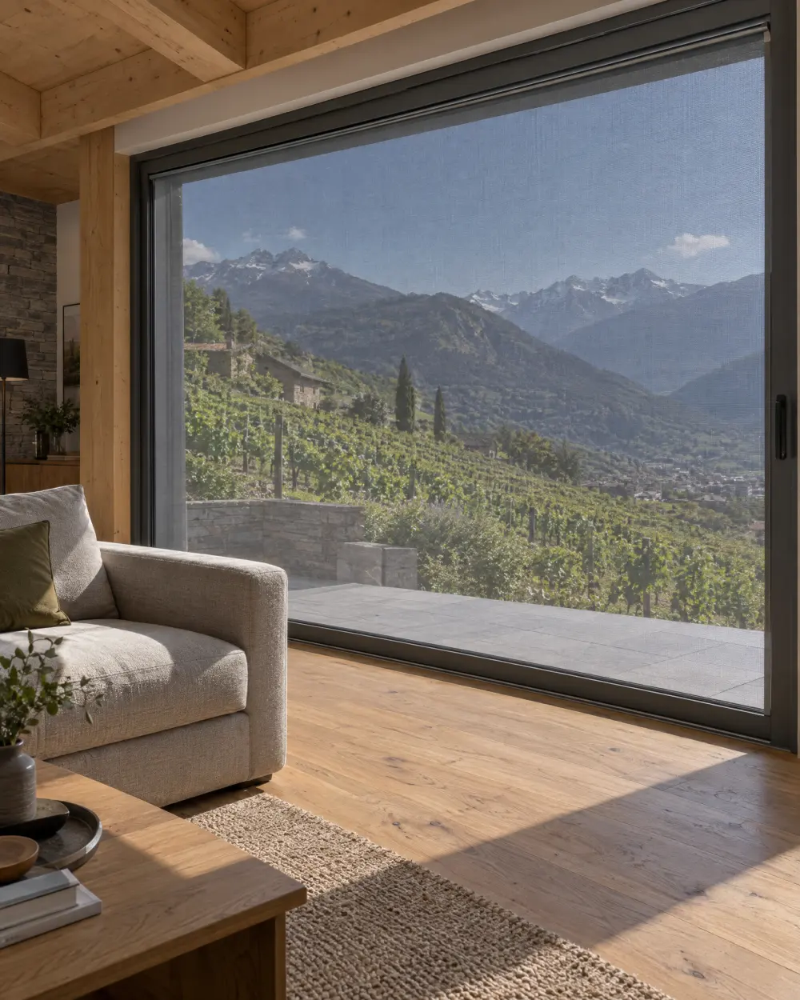
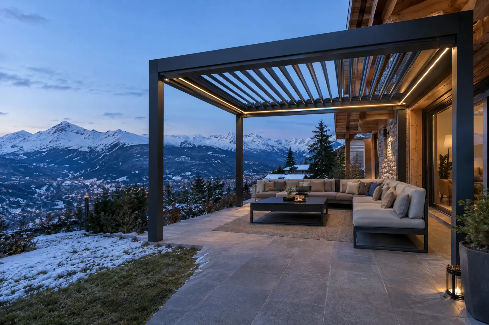
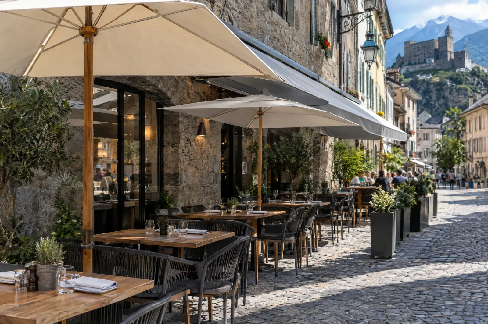
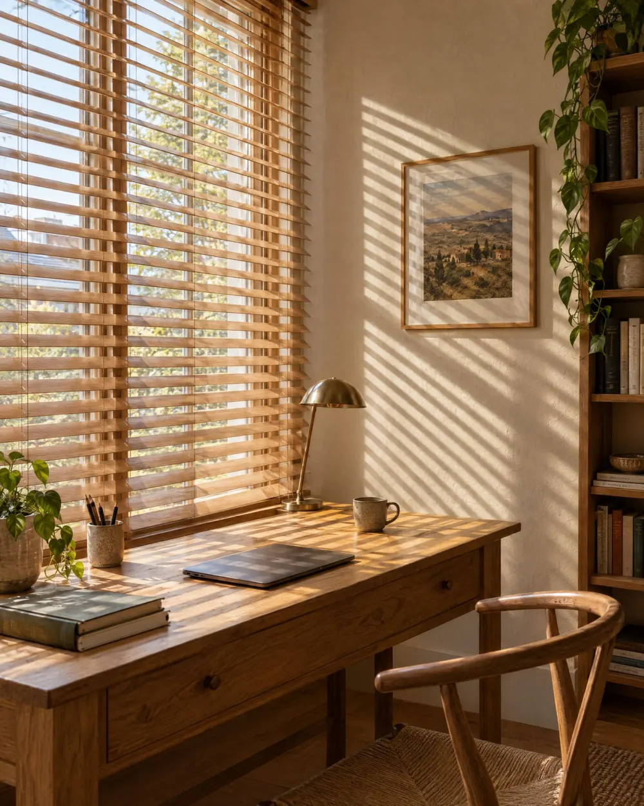
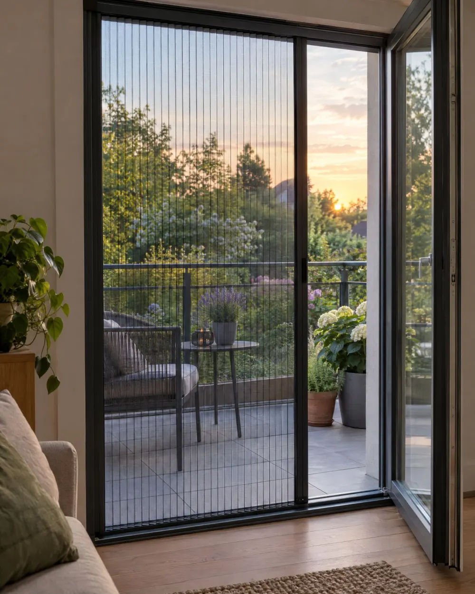

0.–
La visite et le devis sont gratuits.
On vient avec les échantillons, on mesure et on vous laisse un devis détaillé. Vous ne payez rien tant que vous n’avez pas signé.

Stores, volets et pergolas, mesurés, posés et réparés par la même équipe, partout en Valais depuis 1981.
Pose et réparation Stobag, Gibus, Glatz, Somfy et Velux.









Ceux qui viennent mesurer travaillent avec ceux qui posent, depuis Sion, Monthey ou Nendaz.
Visite chez vous, conseil sur le produit, choix des toiles et des couleurs.
Nous venons avec les nuanciers et des échantillons de lames, en plaine comme en station. Comptez une heure.
Prix détaillé et délai de fabrication, gratuit et sans engagement.
Sous cinq jours ouvrés, poste par poste : produit, motorisation, pose et reprise de l’ancien store.
Chantier propre, motorisation branchée, tout est réglé avant de partir.
Capteurs de vent réglés pour le foehn, anciens stores repris, et une démonstration des commandes avant notre départ.
Entretien, réentoilage et dépannage, pendant toute la vie de vos stores.
Nos véhicules sont équipés pour réparer la plupart des stores sur place, quelle que soit la marque.
Quatre engagements écrits dans chaque devis, de Saint-Gingolph à Sierre.
0.–
On vient avec les échantillons, on mesure et on vous laisse un devis détaillé. Vous ne payez rien tant que vous n’avez pas signé.
45 ans
Fondée à Sion en 1981, l’entreprise est aujourd’hui menée par la deuxième génération. Plus de 3 000 réalisations, des villas aux bâtiments publics.
3
Sion pour le Valais central, Monthey pour le Chablais, Nendaz pour les stations. Moins de route, plus de temps sur votre chantier.
48 h
Toile arrachée par le foehn, store bloqué ouvert avant l’orage : on passe sous 48 heures ouvrées, puis on planifie la réparation.

Appelez-nous. Nos véhicules sont équipés pour réparer la plupart des stores sur place, toutes marques, même les modèles anciens.
Un interlocuteur technique pour vos soumissions, vos chantiers et l’entretien de vos bâtiments.
Offres sur descriptif CFC 228, conseil sur les produits dès l’avant-projet, suivi de chantier et réception avec la direction des travaux.
Écoles, salles communales, administrations : contrats d’entretien annuels et interventions planifiées pendant les vacances scolaires.
Stores à grande avancée, pergolas étanches et parasols pour les terrasses, posés hors saison pour ne pas fermer.
Réparations groupées par immeuble, devis clairs pour les assemblées et un seul numéro pour les locataires.
4,9
sur Google, 132 avis
« Store banne de cinq mètres remplacé en une matinée, toile superbe et chantier impeccable. Le devis a été respecté au franc près. »
Réponse sous un jour ouvré. Une photo de la fenêtre ou de la terrasse nous aide à vous conseiller.